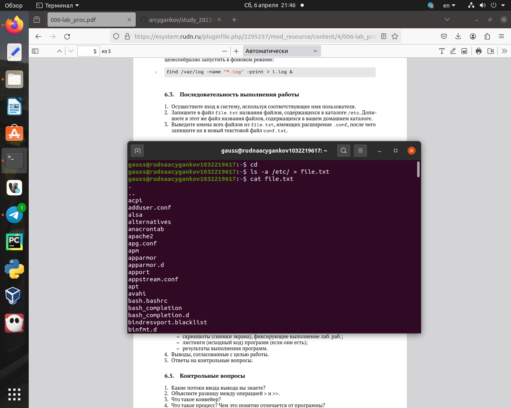
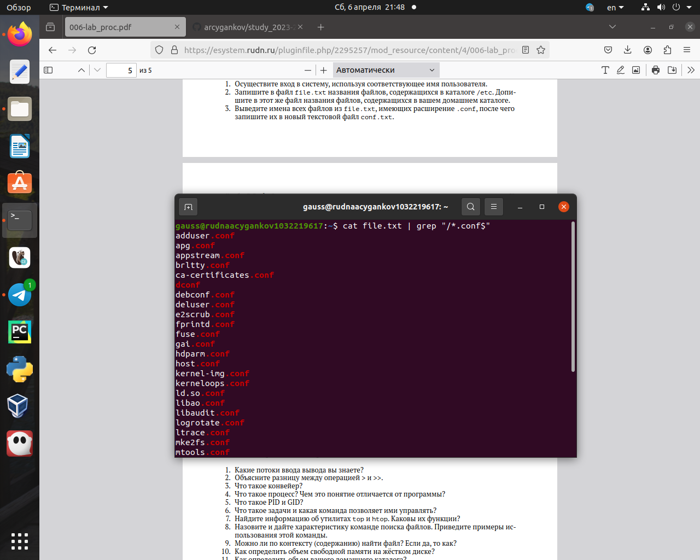
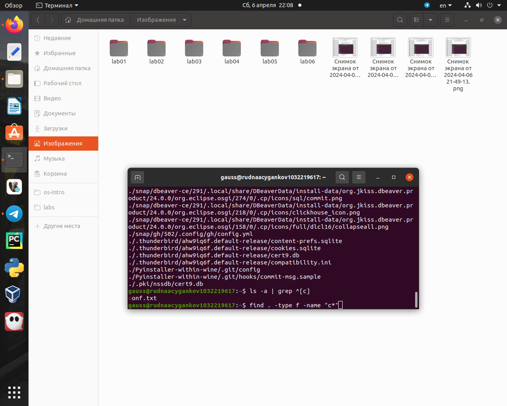
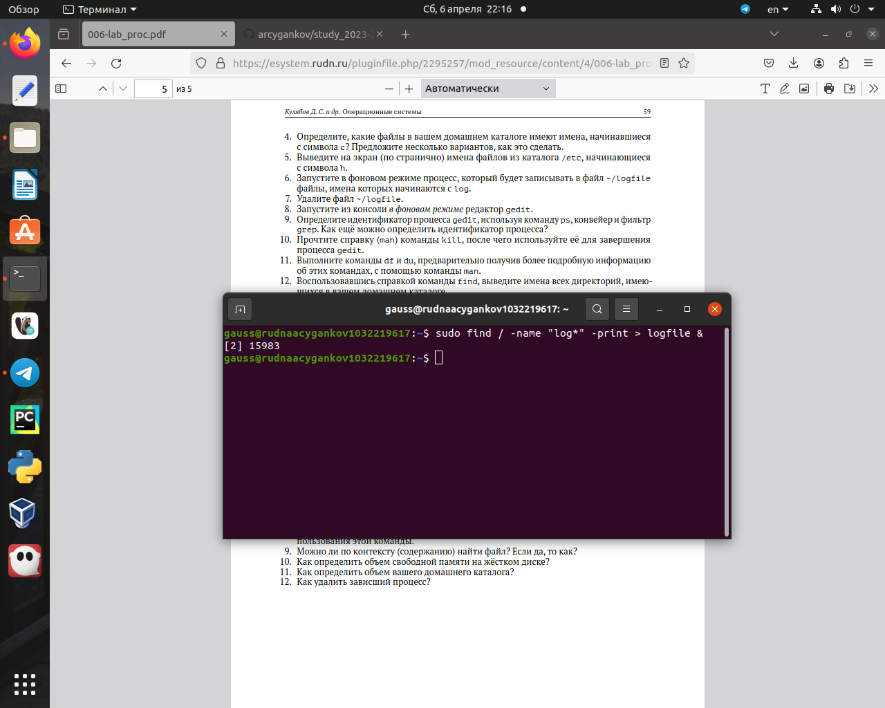
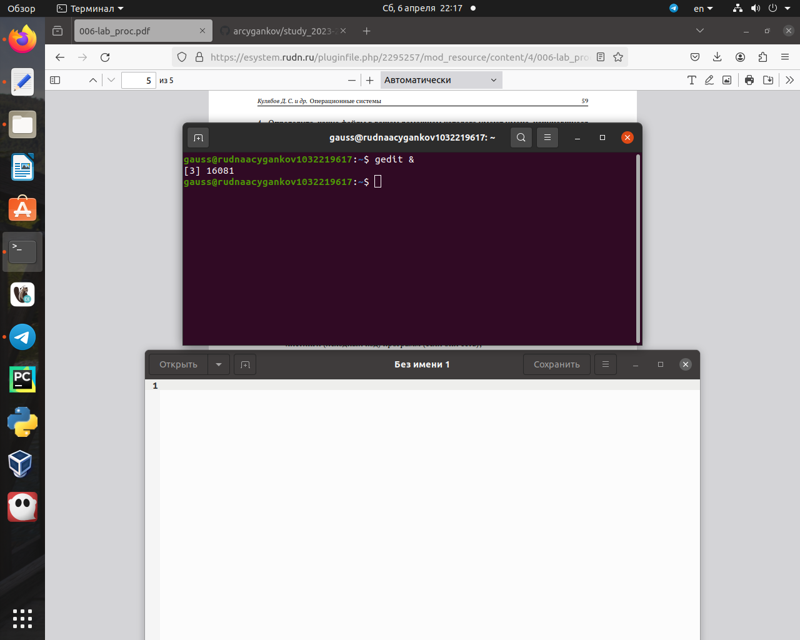
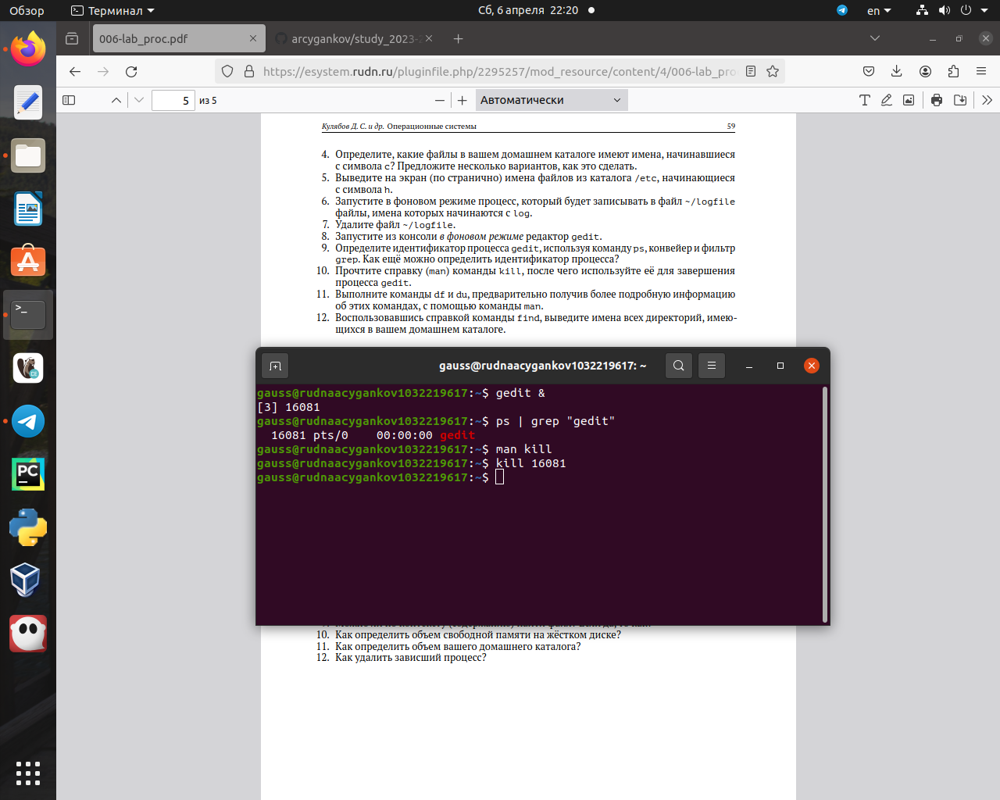
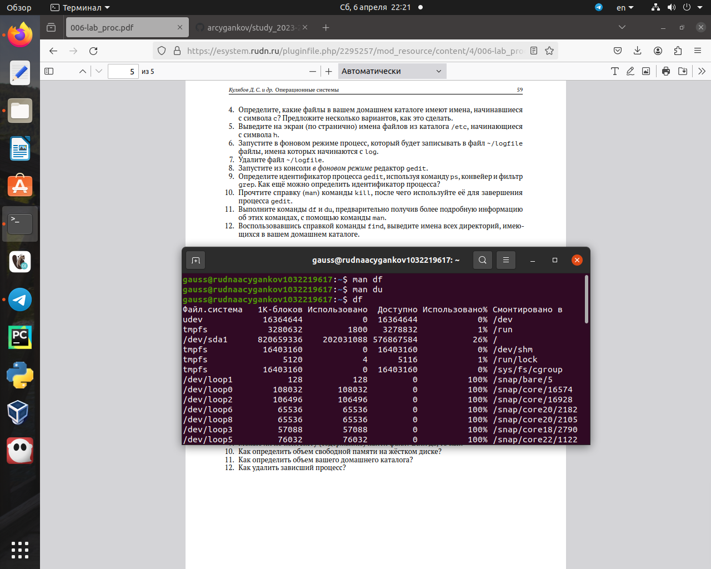
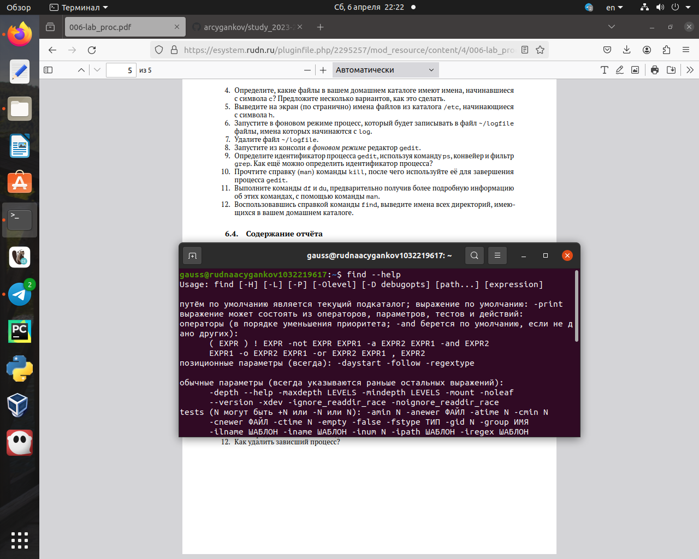
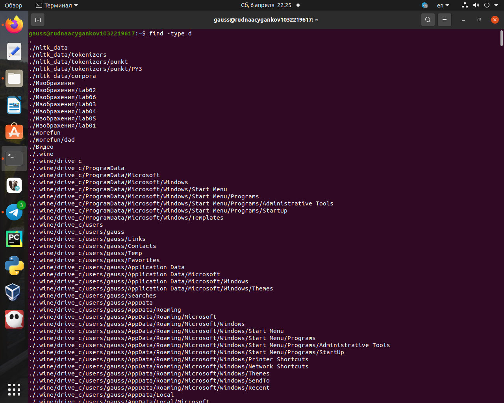

Умение быстро находить нужные файлы, логи в системе важная задача, которая экономит время. Также важно уметь следить за процессами и систематизировать вывод команд.
Объект и предмет исследования
Команды для поиска файлов и фильтрации текстовых данных, а также отслеживания процессов.
Цели и задачи
Ознакомление с инструментами поиска файлов и фильтрации текстовых данных. Приобретение практических навыков: по управлению процессами (и заданиями), по проверке использования диска и обслуживанию файловых систем.
Выполнение заданий.
Запишите в файл file.txt названия файлов, содержащихся в каталоге /etc
Запишите в файл file.txt названия файлов, содержащихся в каталоге /etc
Выведите имена всех файлов из file.txt, имеющих расширение .conf
Файлы из file.txt, имеющие расширение .conf
Определите, какие файлы в вашем домашнем каталоге имеют имена, начинавшиеся с символа c?
ls -a | grep ^[c]
Запустите в фоновом режиме процесс, который будет записывать в файл ~/logfile файлы, имена которых начинаются с log
Процесс, который будет записывать в файл ~/logfile файлы, имена которых начинаются с log
Запустите из консоли в фоновом режиме редактор gedit. Определите идентификатор процесса gedit, используя команду ps, конвейер и фильтр grep. Как ещё можно определить идентификатор процесса?
1) ps | grep “gedit” 2) ps -fC gedit
Используйте kill для завершения процесса gedit
Завершение процесса gedit
Выполните команду df
du
Воспользовавшись find, выведите имена всех директорий, имеющихся в вашем домашнем каталоге
Выполнение
find
Результат
Результаты
Вывод:
В ходе выполнения лабораторной работы я освоил поиск файлов и фильтрацию текстовых данных, направления процессов. Приобрел практические навыки по управлению процессами (и заданиями), по проверке использования диска и обслуживанию файловых систем.